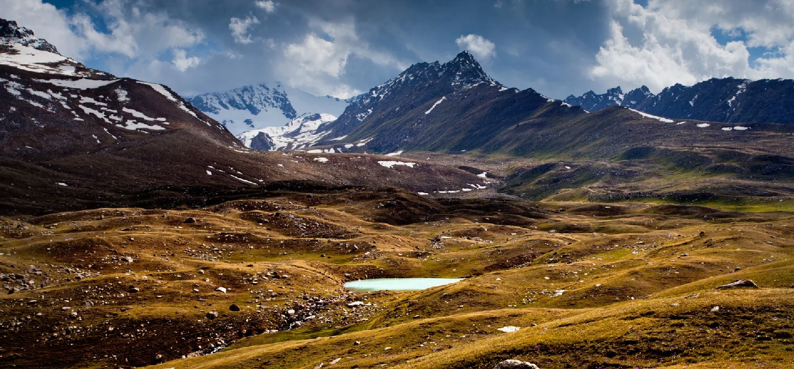
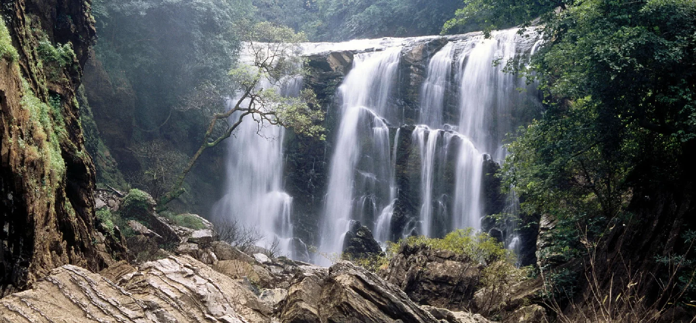

Про подорожі
Some Text

Some Text
Some Text


Марракеш - туристичний напрям №1 згідно з Travellers' Choice 2015 року. Це чарівне місце з безліччю ринків, садів, палаців та мечетей. Поки ви знайомитеся з тісними двориками та блукаєте вуличками історичної частини міста, день мине непомітно. Знайдіть спокій у безтурботних садах Мажорель або ж насолоджуйтеся красою старовинних мечетей міста.
Коли ранкове світло заливає окуті зеленню храми та руїни Ангкор-Ват, звичайний світанок над містом Сіемреап здається незабутнім видовищем. Цей храмовий комплекс по праву вважається одним із найбільших у світі. Разом із "великою столицею", містом Ангкор-Тхом, побудованим в XII столітті, він є основним мотивом для відвідин міста Сіемреап, який в 2015 році посів друге місце в світі у номінації "Туристичний напрям" конкурсу Travellers' Choice.
У Стамбулі, який цього року посів третє місце, зустрічаються Європа й Азія: чудова стародавня архітектура співіснує із сучасними ресторанами та нічним життям міста. Мечеті, базари й турецькі лазні Стамбула не дозволять вам нудьгувати. Перше, що слід відвідати - мечеть Султан-Ахмед-Ками (Блакитна мечеть), яку видно з різних куточків міста. Також можна пройтися Галагатським мостом, а потім звернути до Мініатюрки - парку, де зібрані мініатюрні пам'ятки Туреччини.